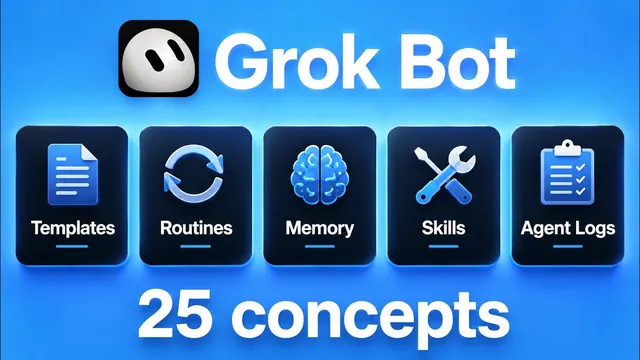

비전공자용 Grok Bot 개념 총정리

원본 영상 보기 →
- 봇의 성능은 프롬프트가 아니라 "설명(description)"에서 갈린다
- 자율 에이전트를 쉽게 찍어낼수록 로깅과 승인 게이트가 생명줄이다
- "로그인 1회 저장 + 로컬 파일 접근"이 실무 진입장벽을 낮춘다
한 줄 요약
xAI의 Grok 봇(Grok Bot) — 이름·직무·설명을 가진 개별 AI 에이전트를 팀처럼 꾸려 쓰는 도구 — 를 제대로 활용하는 데 필요한 25개(+보너스 1개) 개념을 5부로 나눠 정리한 영상이다. 봇 하나의 정의부터 공유 클라우드 컴퓨터, 스킬·routine·webhook, 봇끼리의 위임, 승인·사용량·로깅까지 훑는다.
전체 내용 정리
파트 1 — 봇이란 무엇인가 (개념 1~5)
Grok 봇 하나는 이름, 직무 태그(label), 설명(description)을 가진 독립 에이전트다. Nate(Nate Herk)는 motion(애니메이터), miner(X에서 AI 뉴스·신규 모델·툴 수집), eyes(리서치), views 등 여러 봇을 두고 각 봇과 별도의 대화를 이어간다. 각 봇은 자기만의 스킬·설명·프로세스를 갖는다.
봇 설명이 특히 중요하다. 봇들이 서로 협업할 때 "리서치는 eyes에게, 애니메이션은 motion에게 위임"하는 판단이 전부 이 설명을 근거로 이뤄지기 때문이다. 봇이 많아지면 모든 봇과 직접 대화하는 구조보다, 소수의 "임원" 봇하고만 대화하고 그 임원이 아래 팀 봇들을 아는 조직도(org chart) 구조가 낫다고 말한다.
봇 템플릿: n8n 템플릿이나 Claude 스킬을 가져오듯, Grok 봇은 봇 자체를 통째로 공유할 수 있다. 링크를 열면 지시문·기억·스킬이 담긴 봇이 내 환경에 생성된다(단, 상대의 ClickUp 연결 같은 개인 연동은 안 따라오고 내가 다시 연결해야 함). 설정에서 share as template로 내 봇도 링크로 배포할 수 있다.
맥락(context)과 기억(memory): 맥락은 대화 기록과 프롬프트 등 봇이 볼 수 있는 모든 것이다. 기억은 두 층이다 — 모든 Grok 봇이 공유하는 글로벌 기억과, 특정 봇만 아는 개별 기억. "이건 네 기억에 추가해" 또는 "글로벌 기억에 추가해"로 갱신한다. 어떤 에이전트가 무엇을 아는지 사용자가 파악하고 있어야 한다.
compaction(압축): Claude Code처럼 맥락 창을 꽉 채우면 context rot가 생기는데, Grok 봇은 각 봇이 자기 대화 기록·맥락 창을 갖고 자동으로 요약·압축한다. 사용자가 언제 압축되는지 제어하거나 알 수는 없다. 오래 대화한 봇은 첫 메시지들은 못 보더라도 기억과 목표 맥락, 최근 30~50개 메시지 요약을 갖고 움직인다.
파트 2 — 봇이 일하는 곳 (개념 6~10)
에이전트 컴퓨터: 모든 Grok 봇은 컴퓨터를 쓴다. 화면을 들여다보고 조작할 수 있다. 봇마다 개별 화면에서 작업하지만 결국 다 같은 하나의 컴퓨터를 공유한다.
브라우저: 컴퓨터 안 브라우저로 Google을 쓰듯 검색·조작한다. 핵심은 로그인이 저장된다는 점이다 — school, GitHub, LinkedIn 등에 사람이 한 번 아이디·비밀번호로 로그인해두면 이후 봇이 그 계정 안에서 대신 작업한다.
파일 탐색기: 봇들이 파일을 공유하는 곳이다. 브레인스토밍, 대시보드, 이 영상 작업 파일 등이 든 워크스페이스가 모든 봇의 컴퓨터에서 똑같이 보인다.
터미널: 봇도 터미널이 있어 명령 실행, 스크립트 세팅이 가능하다. 컴퓨터가 할 수 있는 건 다 한다.
로컬 파일 접근: 공유 클라우드 컴퓨터와 별개로, 실제 내가 쓰는 컴퓨터의 로컬 파일에도 접근한다. Nate는 다운로드 폴더의 파일 경로를 주고 "분석하고 이름 바꿔서 옮겨"라고 했더니 봇이 로컬에서 파일명을 "zero to pro"로 바꾸고 new thumbs 폴더로 이동시켰다.
파트 3 — 봇의 능력 (개념 11~15)
플러그인: Slack, Gmail, Google Docs 등에 봇을 연결하는 방법이다. plugins에서 add를 누르고 로그인하면 끝이고, 한 서비스에 여러 계정(예: ClickUp 메인 계정 + 서브 계정)을 붙여 봇마다 다른 계정을 쓰게 할 수 있다. Nate의 봇들은 하는 일마다 ClickUp 보드에 작업(owner, 요청 내용, 산출물, 링크, 진행 업데이트)을 기록하게 돼 있어 주간 리뷰가 쉽다.
스킬(skills): Claude·Codex의 스킬처럼 슬래시 명령으로 부르는 "레시피"다. 초콜릿칩 팬케이크 레시피를 저장해두고 매번 꺼내 보고, 덜 익었으면 "다음엔 좀 더 구워"라고 레시피를 고치는 것과 같다. 실행할 때마다 피드백으로 개선된다. 좋은 스킬에는 언제 쓰는지, 정확한 실행 순서, 실패 시 대처가 들어간다. plugins의 installed → private plugins에 스킬이 모여 있다.
teach a task(작업 가르치기): 브라우저(주로 Chrome)에서 record를 누르면 봇이 화면을 보며 학습한다. 탭 이동·링크 열기 등을 시연하고 stop을 누르면 그 시연을 스킬로 바꾼다. 자연어로 프로세스를 설명해 스킬을 만들 수도, 몇 분간 실제로 작업하는 걸 봇이 어깨너머로 보게 해 만들 수도 있다.
routine(루틴): 뭔가를 자동으로 일어나게 하는 것이고, 그 뭔가가 스킬일 수 있다. "매일 오후 5시에 이거 해줘"라고 말하거나 + 버튼으로 만든다. 트리거는 시간(스케줄, 매시간, 인터벌)일 수도 이벤트일 수도 있다. Nate는 매주 일요일 오후 8시에 도는 work log archive 루틴을 예로 든다.
webhook(웹훅): 초인종처럼 "무슨 일이 생기면" 봇을 깨우는 이벤트 트리거다. Slack 메시지, 팀 메시지, 폼 제출, 새 이메일, 새 CRM 레코드 등이 방아쇠가 된다. Nate는 데모용 폼(이름·이메일·요청)을 제출하면 webhook이 payload를 쏘고, 봇이 깨어나 신청자에게 접수 확인 이메일을 보내고 ClickUp으로 Nate에게 DM 하는 흐름을 보여줬다.
파트 4 — 봇끼리 함께 일하는 법 (개념 16~19)
그룹챗: 여러 봇을 한 채팅방에 모은다. Nate는 chief of staff·COO·CFO·CCO 역할 봇들과 "장기 목표와 성장 전략을 논의해"라고 시키면, 각자 자기 전문 영역과 자기가 관리하는 하위 봇들 관점에서 서로 언급하며 브레인스토밍한다.
멘션(mentions): 그룹챗에서 봇이 다른 봇을 @로 부른다. 클릭하면 그 대화로 이동한다. 사람이 "@Becky 이거 해줘"로 위임할 수도 있지만, 설명이 충분히 좋으면 명시적으로 안 불러도 봇이 알아서 위임한다.
핸드오프(handoffs): 봇이 봇에게 일을 넘기는 것이다. Becky가 모션 그래픽 작업을 motion에게 넘긴 대화를 클릭해 그대로 볼 수 있다("Nate가 이걸 원해, 산출물은 이거"). 한 봇이 여러 봇(coffee, miner, Becky)에게 동시에 넘기기도 한다. 봇들의 대화를 사용자가 열람할 수 있어 무엇을 하고 있는지 완전히 보인다.
답글(replies): 여러 일이 동시에 진행될 때 특정 메시지에 답글 버튼으로 대화를 격리한다. Slack·ClickUp에서 스레드에 답하듯, 봇이 무엇에 대한 응답인지 정확히 이해해 맥락이 더 명확해진다.
파트 5 — 통제하고 모니터링하는 법 (개념 20~25)
승인(approvals): settings의 computer 항목에서 로컬 컴퓨터 실행 권한을 관리한다. 봇이 민감한 작업 전 워크플로우를 멈추고 "해도 되냐"고 물으면 always allow 또는 allow once로 답한다. 기본값도 바꿀 수 있다.
휴먼 테이크오버(human takeover): LinkedIn 로그인처럼 사람만 할 수 있는 지점에서 봇이 멈추고 사람을 기다린다. 비밀번호·API 키 같은 민감 정보는 대화 기록에 남기지 말고 여기서 직접 입력해야 한다. 실수로 API 키·비밀번호를 보냈다면 로테이션(재발급)하라고 조언한다.
주간 사용량(weekly usage): 월 20/100/200달러 등 구독에 따라 주간 한도가 있고 7일마다 리셋된다. 100%에 도달하면 온디맨드 결제나 API 빌링 없이는 못 쓴다. 봇 그룹챗은 단일 봇 대화보다 사용량을 많이 먹으니 이 숫자를 주시하라.
실행 이력(run history): routine이 몇 번 돌았는지 확인한다. 이벤트 기반 webhook은 "10분 전, 오후 5시 48분에 실행" 식으로, 시간 기반은 매주 일요일 정시에 도는지 확인할 수 있다. 다만 개별 실행 안으로 들어가 볼 수는 없고 실패 시 X 표시만 뜬다(Nate는 이에 대한 우회책이 있다고 예고).
알림(notifications): 블로커가 있거나 작업이 끝나면 알려준다. 봇별로 켜고 끌 수 있어 Nate는 주력 4개만 켜둔다. 폰으로도 오고, 데스크톱과 완벽히 동기화돼 컴퓨터가 꺼져 있어도 유지된다. 점심·산책 중에도 주머니에서 봇을 지휘할 수 있다.
봇 관리(managing bots): 우클릭으로 핀 고정, 폴더 이동, 숨기기(사이드바에서 감추되 삭제 안 함), 삭제, 템플릿 공유, 프로필 편집, 읽음 표시, 복제가 된다. 복제는 스킬·routine은 유지하고 대화 기록만 비운 같은 봇을 만든다 — 봇 행동이 마음에 안 들 때 리셋 용도.
보너스 — 개념 26: 에이전트 로깅
에이전트가 하는 모든 것을 어딘가에 저장하라. Google 시트든 ClickUp이든 로컬 엑셀이든 SQL 데이터베이스든 상관없다. 새 프로젝트를 만들 때마다 진행 상황을 거기 기록하고, 완료로 옮기고, 아카이브하게 시킨다. 모든 routine 끝에도 그 실행을 로그하게 한다. Grok 봇처럼 자율 에이전트를 쉽게 만들고 팀을 쉽게 키울 수 있는 도구일수록 가시성과 통제력을 잃기 쉬우니 로깅 체계를 반드시 세워라. 영상은 마지막에 무료 2시간 Grok 봇 코스를 안내한다.
핵심 인사이트
- 봇의 성능은 프롬프트가 아니라 "설명(description)"에서 갈린다: 어떤 봇에게 무엇을 위임할지가 전부 각 봇의 직무 설명을 근거로 자동 결정된다. 봇을 늘리기 전에 각 봇이 "한 가지 일을 잘하는" 명확한 설명을 갖췄는지가 먼저다.
- 자율 에이전트를 쉽게 찍어낼수록 로깅과 승인 게이트가 생명줄이다: 조직도식 봇 팀, 그룹챗, 핸드오프는 강력하지만 사용량과 통제력을 빠르게 잠식한다. 승인 기본값, 봇별 알림, 모든 실행의 로그가 없으면 무슨 일이 일어나는지 모르게 된다.
- "로그인 1회 저장 + 로컬 파일 접근"이 실무 진입장벽을 낮춘다: 개발 지식 없이도 사람이 브라우저에 한 번 로그인해두면 봇이 그 계정에서 반복 작업을 대신하고, 로컬 다운로드 폴더 정리 같은 것도 맡길 수 있다.
오늘 당장 해볼 것
- 지금 반복하는 업무 3가지를 적고, 각각을 "한 문장 직무 설명"으로 써본다(예: "매주 월요일 경쟁사 인스타 새 게시물을 수집해 표로 정리한다"). 자동화 업체에 맡길 때 이 설명이 그대로 봇/워크플로우 사양이 된다.
- 자동화 외주 업체에 문의할 때 "폼 제출·새 이메일·새 CRM 레코드 같은 이벤트가 생기면 자동으로 작업이 트리거되고(webhook), 민감한 로그인 지점에서는 사람이 넘겨받게(human takeover) 설계해 달라"고 구체적으로 요청한다.
- 지금 쓰는 자동화(또는 외주로 돌아가는 자동화)의 실행 로그가 어디에 남는지 확인한다. 없으면 "모든 실행을 Google 시트 한 장에 날짜·트리거·결과로 기록해 달라"고 요청해, 나중에 무엇이 돌았는지 되짚을 수 있게 한다.